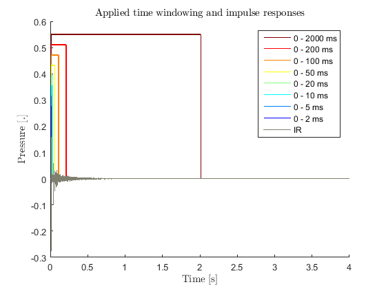
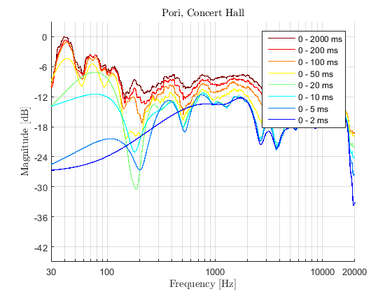
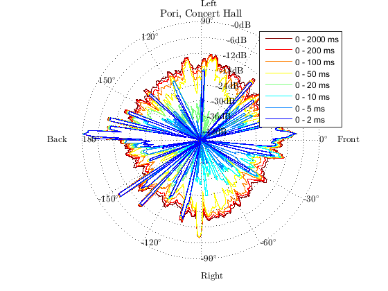
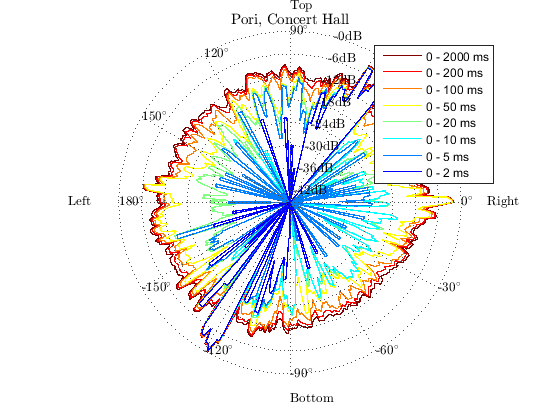
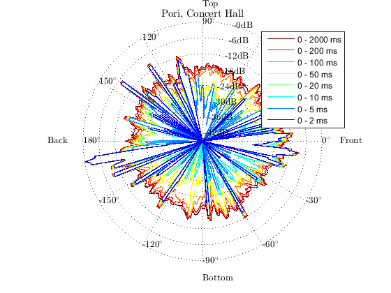

Contents
- Example usage of SDM toolbox for analysis of B-format impulse responses.
- Load the impulse response.
- Read the data
- Create SDM struct for analysis with a set of parameters
- Calculate the SDM coefficients
- Create a struct for visualization with a set of parameters
- Draw analysis parameters and impulse responses
- Draw time frequency visualization
- Draw the spatio temporal visualization for each section plane
Example usage of SDM toolbox for analysis of B-format impulse responses.
The data is a measurement from a class room The documentation of the measurement is found at http://legacy.spa.aalto.fi/projects/poririrs/
% SDM toolbox : demoBformat % Sakari Tervo & Jukka Patynen, Aalto University, 2016 % Sakari.Tervo@aalto.fi and Jukka.Patynen@aalto.fi
Load the impulse response.
% 4s long impulse response measured at 48 kHz % Download an B-format room impulse response from spa.aalto.fi ir_filename = 'sndfld.zip'; if ~exist([ir_filename],'file') disp(['Downloading an example IR ' ir_filename ' from the database.']) url_ir = ['http://legacy.spa.aalto.fi/projects/poririrs/wavs/sndfld.zip']; websave([ir_filename],url_ir); unzip(ir_filename) end
Downloading an example IR sndfld.zip from the database.
Read the data
Read impulse response
[ir_bformat,fs] = audioread('s1_r1_sf.wav');
Create SDM struct for analysis with a set of parameters
Parameters required for the calculation Load default array and define some parameters with custom values fs = 48e3;
a = createSDMStruct('DefaultArray','Bformat','fs',fs,'winLen',15);
User-defined SDM Settings are used :
fs: 48000
c: 345
winLen: 15
parFrames: 8192
showArray: 0
micLocs: [NaN NaN]
Calculate the SDM coefficients
Solve the DOA of each time window assuming wide band reflections, white noise in the sensors and far-field (plane wave propagation model inside the array)
DOA{1} = SDMbf(ir_bformat, a);
% Here we are using the pressure in the b-format as the estimate for the
% pressure in the center of the array
P{1} = ir_bformat(:,1);
Started SDM processing Ended SDM processing in 0.012492 seconds.
Create a struct for visualization with a set of parameters
Load default setup for very small room and change some of the variables
v = createVisualizationStruct('DefaultRoom','LargeRoom',... 'name','Pori, Concert Hall','fs',fs,'t',[2 5 10 20 50 100 200 2000]); % For visualization purposes, set the text interpreter to latex set(0,'DefaultTextInterpreter','latex')
createVisualizationStruct : User-defined visualization settings are used :
fs: 48000
plane: 'lateral'
DOI: 'forward'
plotStyle: 'line'
name: 'Pori, Concert Hall'
res: 1
t: [2 5 10 20 50 100 200 2000]
colors: [8x3 double]
dBSpacing: 6
DOASpacing: 30
dBDynamics: 45
linewidth: [1 1 1 1 1 1 1 1]
showGrid: 1
smoothMethod: 'average'
smoothRes: 3
Draw analysis parameters and impulse responses
parameterVisualization(P, v);
Started visualization of parameters. Ended visualization of parameters in 0.15251 seconds.
Draw time frequency visualization
timeFrequencyVisualization(P, v)
Started time-frequency visualization. Ended time-frequency visualization in 135.5062 seconds.
Draw the spatio temporal visualization for each section plane
v.plane = 'lateral'; spatioTemporalVisualization(P, DOA, v) v.plane = 'transverse'; spatioTemporalVisualization(P, DOA, v) v.plane = 'median'; spatioTemporalVisualization(P, DOA, v) % <----- EOF demoBFormat
Started spatio-temporal visualization. Ended spatio-temporal visualization in 0.41443 seconds. Started spatio-temporal visualization. Ended spatio-temporal visualization in 0.39618 seconds. Started spatio-temporal visualization. Ended spatio-temporal visualization in 0.39182 seconds.  